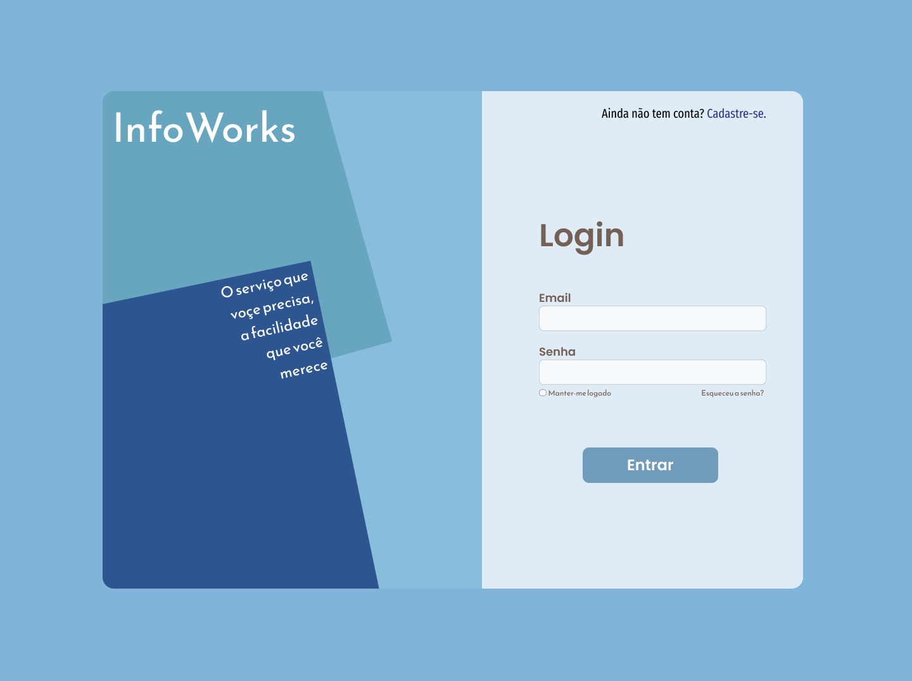
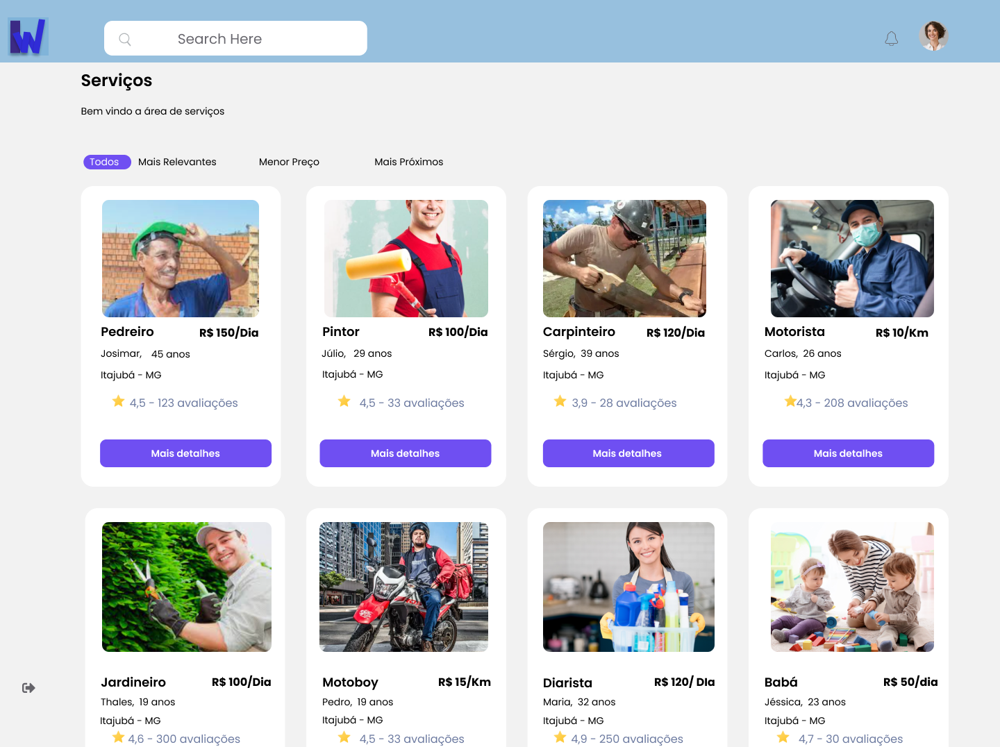
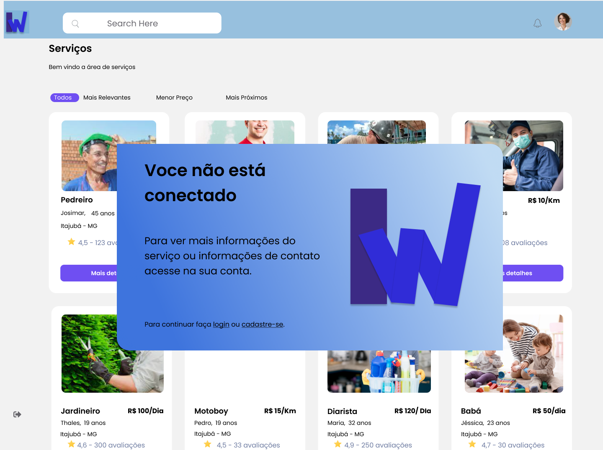
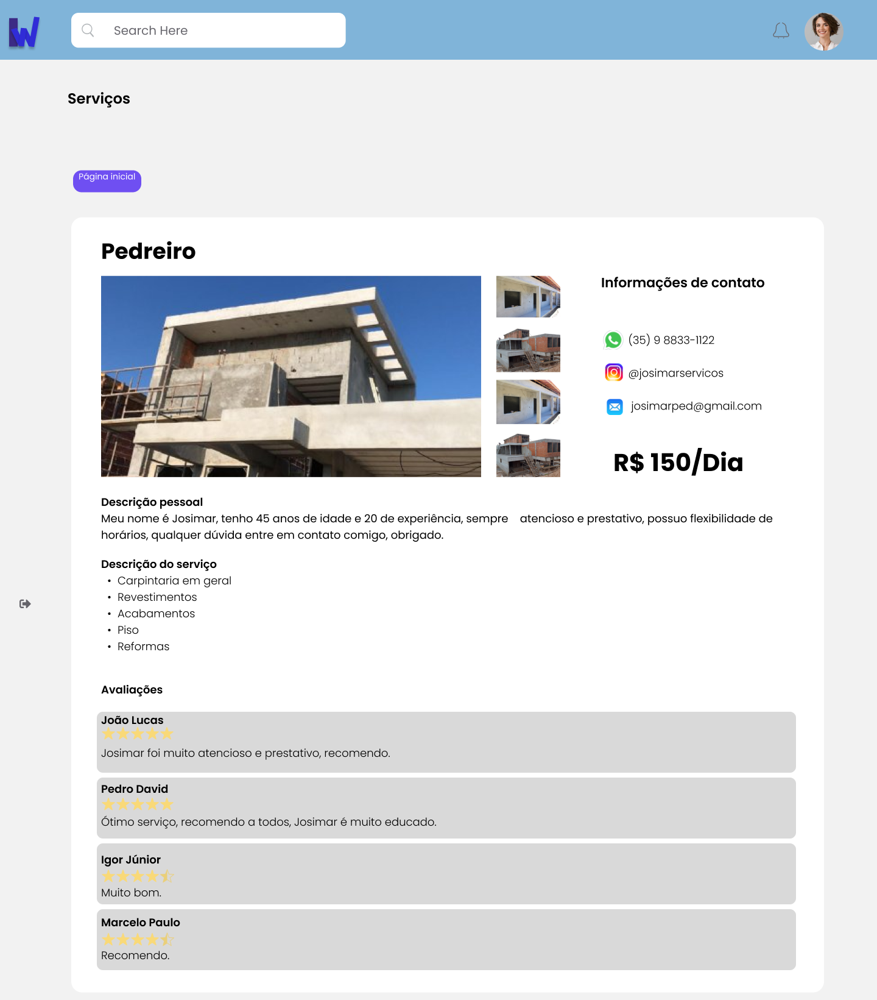
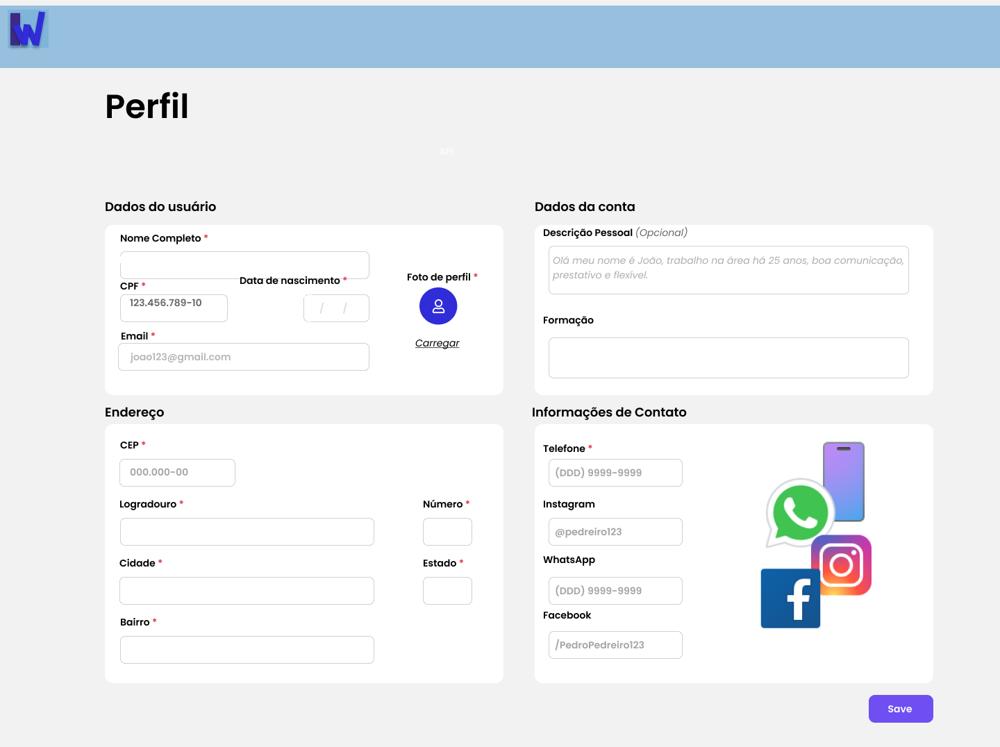

Prototipação
A ferramenta
Figma é uma ferramenta de design gráfico baseada em nuvem que permite aos usuários criar, colaborar e compartilhar designs de interface do usuário de alta qualidade. Uma das principais vantagens do Figma é que ele é uma ferramenta totalmente baseada em nuvem, o que significa que os usuários podem acessá-lo de qualquer lugar com uma conexão à internet, sem precisar instalar nenhum software adicional. Além disso, o Figma permite que várias pessoas trabalhem simultaneamente em um projeto, facilitando a colaboração entre equipes. Outra vantagem é a sua grande variedade de recursos e ferramentas, que incluem bibliotecas de componentes, prototipagem e animação. O Figma também é altamente escalável, o que significa que é adequado para projetos de qualquer tamanho, desde pequenas startups até grandes empresas.
Resultados
A Seguir temos alguns dos protótipos que foram utilizados para o desenvolvimento do site. Estas imagens foram de suma importancia uma vez que o cliente pôde ter uma visualição rápida e muito próxima de como seria o projeto final, agilizando então possíveis alterações, fazendo a ligação entre cliente e desenvolvedor. Ademais de acordo com a evolução do projeto a prototipação pode ser atualizada com novos conteúdos.
Login

Página inicial

Cadastre-se

Página do serviço

Perfil
